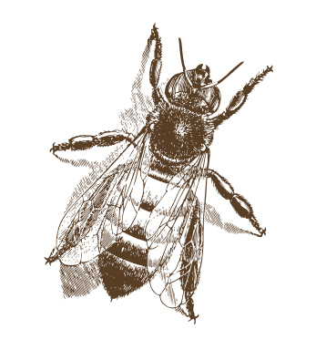

La ruche
Miel traditionnels respectueus
Découvrez notre selection de miels Engagement
Au cœur d'une vocation dédiée à la préservation de l'équilibre naturel, notre apiculteur incarne une passion inébranlable pour l'art ancien de l'apiculture. Imprégné de traditions transmises de génération en génération, son engagement envers la production de miel s'inscrit dans une démarche résolument ancrée dans le respect de la nature. À travers une approche méticuleuse et respectueuse des abeilles, cet apiculteur s'efforce de créer un miel d'une qualité exceptionnelle, révélateur des nuances uniques que la biodiversité offre à chaque saison.
Son rucher, niché dans un écrin de verdure, reflète une philosophie axée sur la symbiose entre l'homme et l'environnement. En favorisant des pratiques agricoles durables, notre apiculteur contribue non seulement à la préservation des abeilles, mais aussi à la diversité florale de la région. Chaque pot de miel qui émane de son exploitation est le fruit d'un processus méticuleux, où l'équilibre entre la tradition et l'innovation se conjugue pour offrir une expérience gustative authentique et pure.
Bienfaits du miel
Antioxydants naturels
Le miel est riche en antioxydants, tels que les flavonoïdes, qui aident à neutraliser les radicaux libres dans le corps, contribuant ainsi à la prévention du vieillissement prématuré et de certaines maladies.
Propriétés antibactériennes et antiseptiques
Le miel possède des propriétés antibactériennes naturelles qui peuvent aider à lutter contre les infections et accélérer le processus de guérison des plaies
Soulagement de la toux
Le miel est souvent utilisé comme remède naturel pour apaiser la gorge irritée et soulager la toux. Il peut être particulièrement efficace lorsqu'il est mélangé à de l'eau chaude ou à des infusions
Produits
Miel de Châtaignier
Le Miel de châtaignier tonifiant, connaît un regain de popularité avec son goût …
Ajouter au panierPain au miel
Le pain au miel est une recette au goût inégalé, fort d’un ancien savoir faire…
Ajouter au panierFigues confites…
La figue se marie à merveille à la douceur du miel pour faire revenir vos plates…
Ajouter au panierNos clients

Isabelle B.
.png)
.png)
.png)
La Ruche offre un miel de très bonne qualité, avec un goût authentique qui rappelle vraiment le savoir-faire artisanal. Les emballages sont soignés, et j'apprécie le côté local de cette entreprise.
.png)
Jean-Luc D.
La Ruche offre un miel de très bonne qualité, avec un goût authentique qui rappelle vraiment le savoir-faire artisanal. Les emballages sont soignés, et j'apprécie le côté local de cette entreprise.
.png)
Marie G.
.png)
Je suis une cliente fidèle de La ruche depuis plusieurs années et je ne peux que recommander leurs produits. Le miel est délicieux, on sent vraiment la qualité artisanale dans chaque pot.